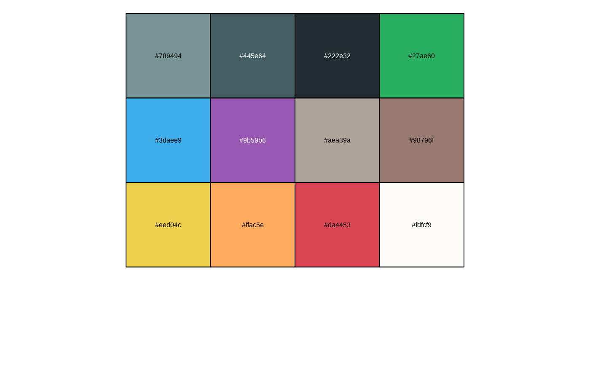

Qualitative color ramp derived from active branding.
Arguments
- x
number of colors to interpolate
- colors
colors to interpolate; must be a valid argument to
col2rgb().- alpha
logical: should alpha channel (opacity) values be returned? It is an error to give a true value if
spaceis specified.- ...
Arguments passed on to
grDevices::colorRampbiasa positive number. Higher values give more widely spaced colors at the high end.
spacea character string; interpolation in RGB or Lab color spaces.
interpolateuse spline or linear interpolation.
Examples
x <- rchisq(100, df=4)
hist(x, freq=FALSE, ylim=c(0, 0.2), col=brand.colors(20), border="white")

#> Warning: cannot open file '_brand.yml': No such file or directory
#> Error in file(file, "rt", encoding = fileEncoding): cannot open the connection
hist(x, freq=FALSE, ylim=c(0, 0.2), col=brand.colors(8, alpha=0.5), border="white")
#> Warning: cannot open file '_brand.yml': No such file or directory
#> Error in file(file, "rt", encoding = fileEncoding): cannot open the connection